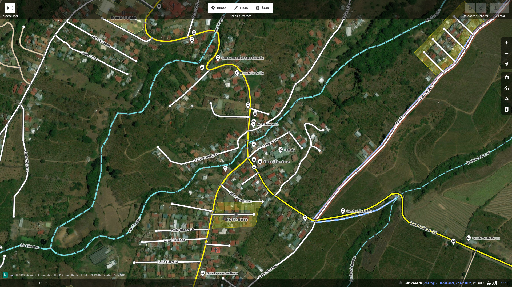

Editando Mapa
Para editar un mapa es necesario tener una cuenta en la página
https://www.openstreetmap.org donde se puede utilizar el iD para realizar la edición de los mapas.
El editor permite añadir nuevos lugares, así como corregir lugares que fueron previamente añadidos por otros usuarios. Estos cambios se guardan en la base de datos y en cuestión de minutos los cambios pueden ser visible para cualquier persona que acceda a una mapa que utilize open street maps.
A continuación se muestra un mapa que fue editado a travéz del iD de Open Street Map. En el se muestra el pueblo de San Bosco, y en el se agregaron lugares como el Open Express, Farmacia San Bosco y Ferreteria Murillo. Estos cambios ya son parte del mapa y cualquier persona los puede ver.
